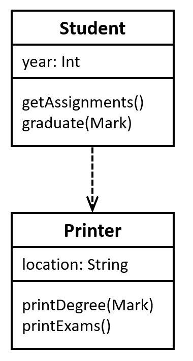
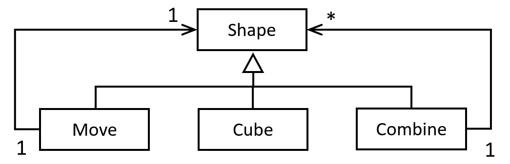

| Cube
| Move of Shape * float * float * float
| Combine of Shape list
Full name: structure.Shape
val float : value:'T -> float (requires member op_Explicit)
Full name: Microsoft.FSharp.Core.Operators.float
--------------------
type float = System.Double
Full name: Microsoft.FSharp.Core.float
--------------------
type float<'Measure> = float
Full name: Microsoft.FSharp.Core.float<_>
Full name: Microsoft.FSharp.Collections.list<_>
CO886: Software Engineering
Modelling structure
Tomas Petricek
email: t.petricek@kent.ac.uk
twitter: @tomaspetricek
office: S129A
{kind=link}
Decomposing systems into modules

David Parnas (1972)
Conventional
Subroutines follow the order of execution
Unconventional
Modules abstract some aspects of implementation
How to structure large programs

Procedural approach
- Programs that run top-to-bottom
- Break program into smaller steps
- But what data is passed between?
Logical abstraction
- Identify logical components
- Hide implementation details
- How data is represented, stored, ...

Barbara Liskov (1974)
Abstract data types
Programming language mechanism for abstraction
Object oriented programming

Origins of objects
- Simulating real-world systems
- World consists of objects
- Created according to a scheme
Object-oriented abstraction
- Class defines a template for object
- Multiple instances of a class
- Objects hide implementation details

Alan Kay et al. (1972)
Smalltalk
"Actually I made up the term "object-oriented", and I can tell you I did not have C++ in mind."
Galactic scale
Computer made of small computers that exchange messages
Modelling object-oriented systems
UML class diagrams

Modelling structure
- Relationships between entities
- Capture data and key operations
- Good fit with object-oriented style
Class diagrams in practice
- Heavyweight: Upfront application architecture
- Lightweight: Whiteboard architecture discussions
UML class diagrams

Representing a class
- Attributes and methods as in Java
- Can be more abstract than code
- Often, name is all you need
Topics not covered
- Representing individual instances
- Marking attributes as private
- Interfaces and other types
Fancy arrows
|
Has-A 
|
Is-A 
|
Depends-on Requires/uses another entity  |
Demo: Modelling social networking app
Using generalisation relation (1/2)

Social network example
Cache can only cache posts with some multi-media content attached
Representations
- Link to Post with a comment?
- Link from Cache to Image and Link?
- Are there better options?
Using generalisation relation (1/2)

Social network example
Cache can only cache posts with some multi-media content attached
Add a new entity!
- Image and Link are MediaPosts, Plain is not
- Good explanation, maybe not needed in code
UML class diagrams
Modelling using class diagrams in practice
Fully describe application architecture
Generate Java from diagrams and add code
Whiteboard discussion and then erase
Generate diagram from code to understand it
Modelling beyond objects

DEMO: Fun 3D
www.fun3d.net
Functional programming abstractions
Domain-specific languages
Two ways of modelling 3D worlds
Object-oriented class hierarchy
Functional algebraic data type
1: 2: 3: 4: |
|
Two ways of modelling 3D worlds

Object-oriented class hierarchy
- Abstract method in the base class
- Implementation in each shape
- Easy to add new shapes
Functional algebraic data type
- Separate data from functions
- Render function handles all cases
- Easy to add new operations

The Expression Problem
Object-oriented style
Easy to add new types, hard to add operations
Functional style
Easy to add functions, hard to add new types
Can we get both?
Domain-specific languages

Motivation: When do we need this?
- Repeated problem, many variations
- User stories, game logic, contracts
- Accessible to non-programmers
Solution: Build a language for a given domain!
- External – New language with custom syntax
- Internal – Library in an existing language
Domain Specific Languages (DSLs)
Model
What we work with? How does it compose?
Syntax
How can we write it in a human-friendly way?
Functional and object-oriented DSLs
Functional languages
Custom operators and function composition
1: 2: |
|
Object-oriented languages
Fluent interfaces and the builder pattern
1: 2: |
|
Modelling beyond objects
Many ways to express problems in code
Functional - separate data and functions
Domain specific languages - for a specific problem
Event sourcing - state as a list of events
Microservices - system as independent servers
Summary
Modelling structure
Decomposing systems into modules
From subroutines to abstract modules and objects
Abstract data types, object-oriented programming
Object-oriented modelling
Heavyweight and lightweight methodologies
Is-A, Has-A and dependency relations
Beyond object-oriented modelling
Functional programming and the expression problem
Solving repetitive problems with DSLs
CO886: Modelling structure
What you should remember from this lecture
- Abstraction and origins of objects
- Class diagrams and three kinds of arrows
- Be aware that there are other options!
Tomas Petricek
t.petricek@kent.ac.uk | @tomaspetricek
References
Academic papers
- David Parnas (1972). On The Criteria To Be Used in Decomposing Systems into Modules
- Barbara Liskov, Stephen Zilles (1974). Programming with Abstract Data Types
- Alan Kay (1993). The Early History of Smalltalk
Tools, books and articles